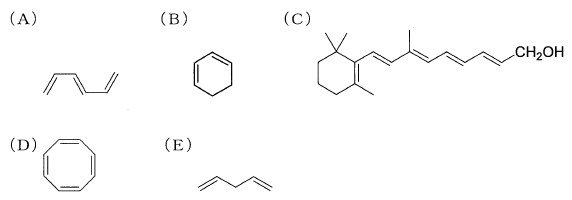

平成25年度 問7 化学プロセス
次の（A）～（E）の化合物の紫外・可視吸収スペクトルを測定したとき、λmaxの値が最も大きいものと最も小さいものの組合せはどれか。

| 選択肢 | λ max の値が最も大きい | λ max の値が最も小さい | |
|---|---|---|---|
|
①
|
C | A | |
|
②
|
D | B | |
|
③
|
C | B | |
|
④
|
C | E | |
|
⑤
|
D | E | |
正答
④ λ max の値が最も大きい：C、λ max の値が最も小さい：E
紫外可視吸収スペクトルは、共役が大きいほど吸収極大λmaxの波長は長波長側へシフトします。共役は二重結合と単結合が交互に繋がっている状態を表します。
一番共役が長い（λmaxが大きい）のはCです。ビタミンA1（レチノール）です。
BとEは、どちらも二重結合が2つです。Eは二重結合－単結合－単結合－二重結合と共役構造になっていないことから、一番共役が短い（λmaxが小さい）化合物です。